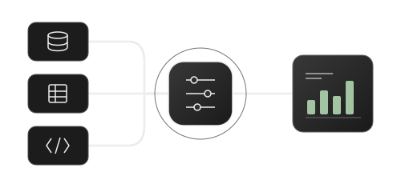

01 / Applied experience · Retention
Understand churn. Inform operations.
Reason classification, customer tenure and comparison rules to make churn reporting useful for operations.
Explore caseAnalytics · Reporting · Automation
I combine Customer Service supervision with operational analytics. I build reports, dashboards and automations to make performance visible and support management decisions.
Buenos Aires, Argentina · CS Supervisor | Operations Reporting Analyst

INTEGRATE · VALIDATE · INTERPRET
01 / Selected work
Applied experience, academic projects and public code. Each case explains my contribution, available evidence and limitations.
01 / Applied experience · Retention
Reason classification, customer tenure and comparison rules to make churn reporting useful for operations.
Explore case02 / Applied experience · Automation
Availability, lead time and duplicate checks to organise fleet inspection scheduling.
Explore case03 / Applied experience · deRentas
Reporting that connects Customer Service and operational performance with priorities and actions.
Explore case
04 / Portfolio project · Python + SQL
Exploratory analysis and a reproducible pipeline with validation, SQLite and load auditing.
Explore case
05 / Academic projects · Business Intelligence
Two academic projects in Power BI and Tableau exploring products, cities and periods, with documented scope.
Explore case02 / About me

At deRentas, I work in Customer Service, combining operational supervision with analytics and reporting. I connect team needs with organised information, measurement criteria and tracking tools.
I contribute to customer and operational KPI tracking, churn analysis and management reporting. I want each deliverable to make clear what is happening, what needs attention and what comes next.
I am developing towards Data Engineering, focusing on integration, transformation and data quality. The airports pipeline is a learning extension that makes that progress visible.
Define populations, periods and metrics before interpreting results.
Connect metrics with priorities, ownership and progress reviews.
Add validation and automation where work needs consistency.
03 / Tools
Excel · Google Sheets · SQL · Python / Pandas
Power BI · DAX · Tableau
Google Apps Script · Validation · SQLite
If you are looking for someone who connects data, operations and Customer Service, let’s talk.